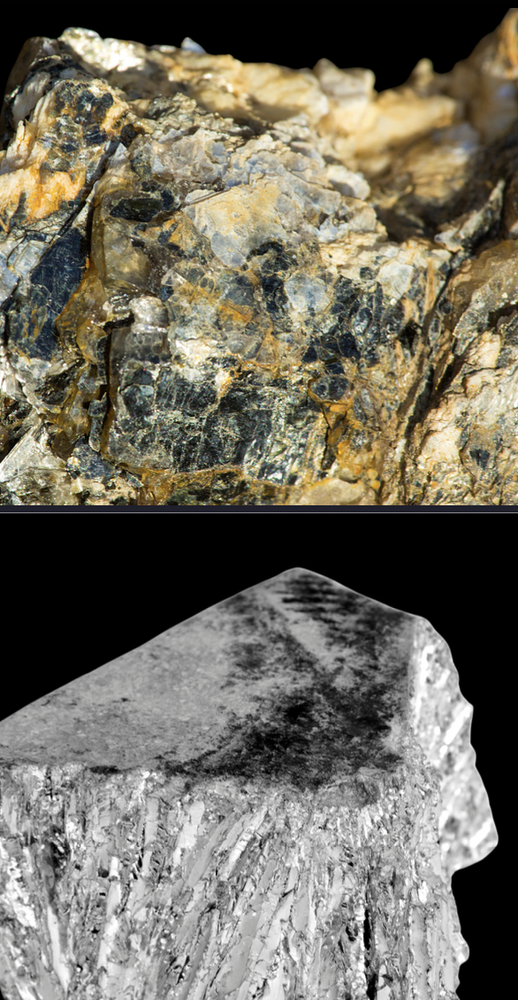
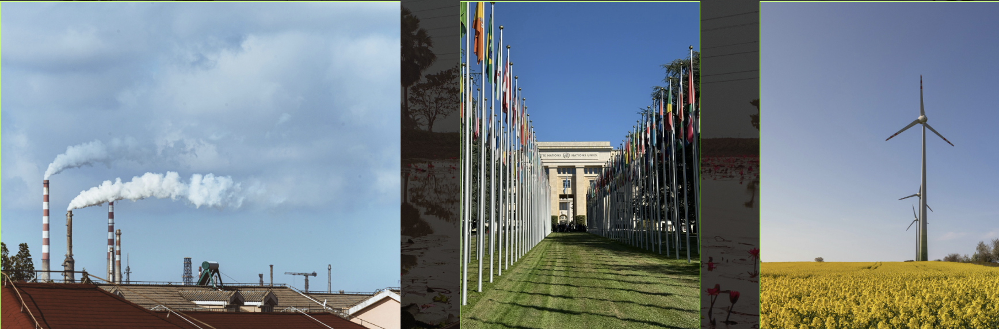

Presentation2025
Volt Rush: Critical Minerals & the New Energy Geopolitics
Based on Henry Sanderson's Volt Rush
Presentation synthesizing Sanderson's analysis of the critical minerals supply chain underpinning the green energy transition — covering lithium, cobalt, nickel, and copper extraction, the geopolitical winners and losers in the race to go green, and what it means for U.S. policy and alliance strategy.

Group Presentation2025–2026
The Energy Transition: Structural Tensions & Ethical Dilemmas
Hard-to-abate sectors · Just transition · Geopolitical tradeoffs
Group presentation examining the structural tensions embedded in the global energy transition — including the ethics of phaseout timelines for fossil-fuel-dependent economies, the justice implications of critical mineral extraction, and the geopolitical tradeoffs of clean energy dependence on authoritarian supply chains.
With: Caitlynn Rais · Jacob Knack · Sergio Campanini
2022–2023
Mock Political Campaign
Full-cycle campaign design · Strategy · Visual Identity
Collaborative design and execution of a complete mock political campaign strategy — covering candidate positioning, voter targeting, messaging architecture, visual identity, and campaign materials including postcards and digital assets. Demonstrates applied understanding of political communication and electoral strategy.
2023–2024
DA International Branding & Marketing Overhaul
Brand Identity · Content Strategy · Visual Redesign
Comprehensive content and design overhaul for DA International — an organization operating across borders — to strengthen brand identity and improve client communication. Involved redesigning visual assets, restructuring messaging, and developing a cohesive content strategy aligned with organizational goals and target audiences.